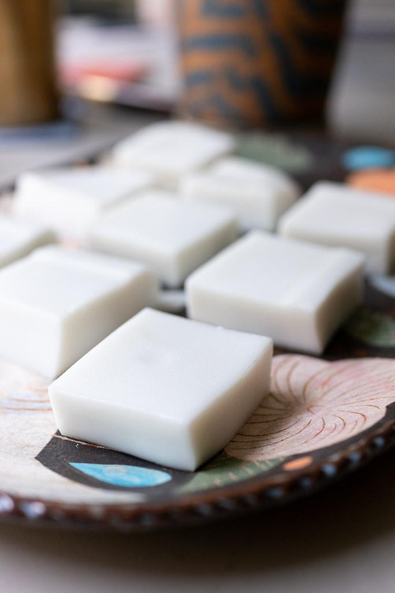
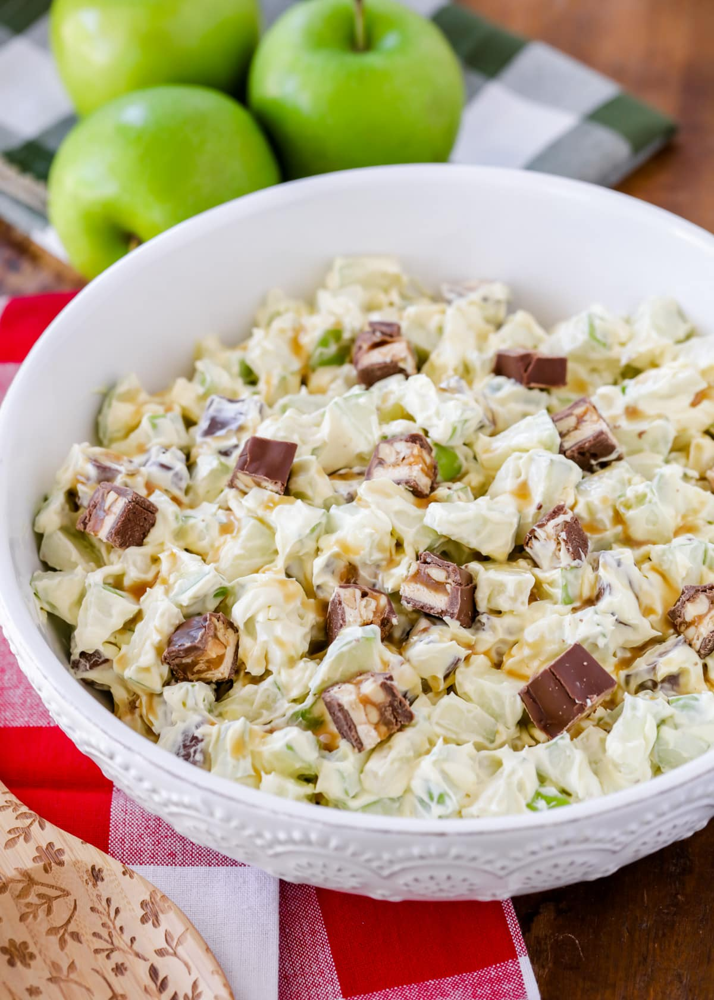

Chocolate Buttercream Frosting
- 1 cup semi-sweet chocolate chips
- 1 cup butter, room temperature
- 2 cups powdered sugar
- 2 tsp vanilla extract
- 1⁄4 cup unsweetened cocoa powder
Place the chocolate chips in a glass bowl and microwave them for 90 seconds, stir, and microwave for an additional 30 seconds. Stir until smooth. Let cool to almost room temperature.
In a mixing bowl, beat the butter on medium speed until smooth. Add 1 cup of powdered sugar and beat again. Make sure to scrape the sides of the bowl to incorporate all of the ingredients. Add the vanilla and the cooled chocolate and beat on high until fluffy, about 2 minutes.
Fudge Sauce
- 1⁄2 cup butter
- 1 cup evaporated milk
- 1 cup sugar
- 1⁄2 cup cocoa powder
Combine ingredients in a small saucepan on medium heat. Stir until simmer, then remove. It will thicken as it cools.
Haupia
Serving size: 100- 1 gallon can Chakoh coconut milk
- 4 cups sugar
- 1 heaping tsp salt
- 4 cups water
- 3 cups cornstarch
Combine coconut milk, sugar, salt, and bring to a rolling boil. While bringing to boil, combine water and cornstarch (use some water to slosh out cans of coconut milk). When coconut milk comes to a boil, stir cornstarch mixture and add to coconut milk. Stir continuously for 1 minute, making sure all lumps are gone.
Quickly pour and evenly spread in long shallow pan. This step needs to be done quickly. Haupia sets fast and overworking will create lumps. Let cool completely before cutting. Lay wax paper on cut haupia.
Banana Pie
- Pie crust filling:
- 4 cup milk
- 3⁄4 cup sugar
- 5 eggs
- 1⁄4 tsp cinnamon
- 1⁄8 tsp ground allspice
- Nutmeg
- Butter slices
- About 8 large ripe bananas
- Pie crust (2 pies):
- 3 cup flour
- 1 tsp salt
- 11⁄4 cup shortening
- 1 egg
- 2 Tbsp vinegar
- 31⁄2 Tbsp cold water
Fill bottom crust with sliced ripe bananas. Sprinkle lightly with cinnamon and ground allspice. Sprinkle with 1⁄3 cup sugar and 1⁄4 cup flour and dot with a 1⁄2 stick of butter (cut in little pieces). Put top crust over. Cut 4 slits on top crust to allow air to escape. Brush top with some milk and bake 375 degrees farenheit for 45 mins - 1 hour, or until golden brown.
Chocolate Chip Cookies
- 41⁄2 cup flour
- 1 tsp salt
- 1 tsp baking soda
- 11⁄2 cups (3 sticks) unsalted butter, melted
- 11⁄2 tsp vanilla extract
- 2 cup brown sugar
- 1 cup white sugar
- 2 eggs
- 2 egg yolks
- 3 cup chocolate chips
- 1 cup toffee bits (optional)
- 1⁄2 cup pecans (optional)
Preheat oven to 375 degrees farenheit. Whisk together the flour, salt, and baking soda. Set aside. Melt butter, let cool. Then, add the vanilla, both sugars and egg and yolks to the butter. Fold in dry ingredients, add chocolate chips and toffee bits. Bake for about 15-18 minutes.

Snicker Salad
Serving size: 15-20- 4-5 large crisp apples
- 1 pkg "Fun Size" snicker bars or 5 regular size bars (place in freezer to harden-usually overnight)
- 1 tub of Cool Whip or fresh whipped heavy cream
Cut apples into 1" chunks and place in bowl. Unwrap snicker bars and place in gallon Ziplock bag. Using a mallet or some other heavy object to smash snicker bars into small/medium sized chunks (preference). Add to cut apples then add Cool Whip and mix all ingredients well. Refrigerate for a couple hours.
